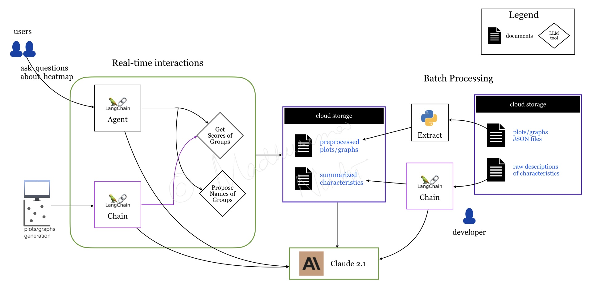

Healthcare Q&A virtual assistant
A healthcare technology start-up client wanted
to improve their application interface by
incorporating GenAI to boost customer experience.
At the current state, the interface performed
clustering on the biopharmaceutical and medtech datasets
and generated plots representing the different groups.
The objective was to build a Q&A chatbot to
assist both experts and non-medical users
to easily gain insights from these plots.
A prototype chatbot powered by the
Anthropic Claude LLM on AWS Bedrock
was
Ingesting data as-is in the LLM prompt
increased latency, token usage and thus cost.
Pre-processing data to extract relevant information
and summarizing it helped to improve accuracy and reduce
latency.
Implementing LLM agent with carefully
designed prompt and the appropriate tools provided
a flexible framework to answer various types questions,
as well as the capability to expand the scope of
questions in the future.
Note: We were not responsible for the front-end development.
Solution architecture

LLM chain
to summarize descriptions
of characteristics of each group which represent
various medical conditions or symptoms.
LLM chain
to propose a name for each group/clusters
from the graphs.
LangChain agent
to answer questions about the groups.